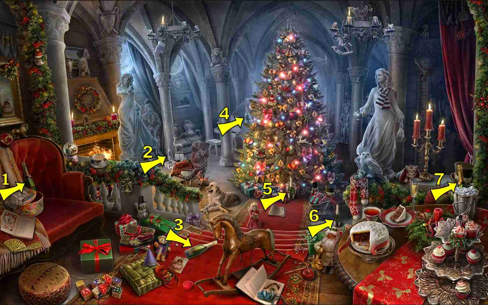
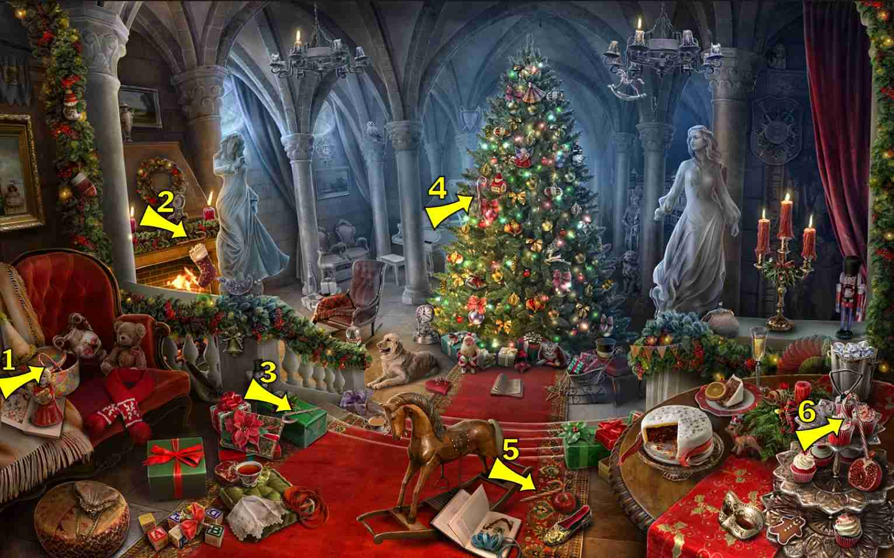
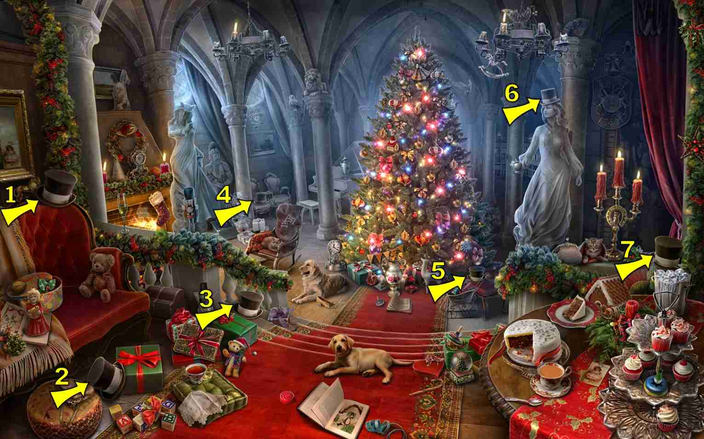
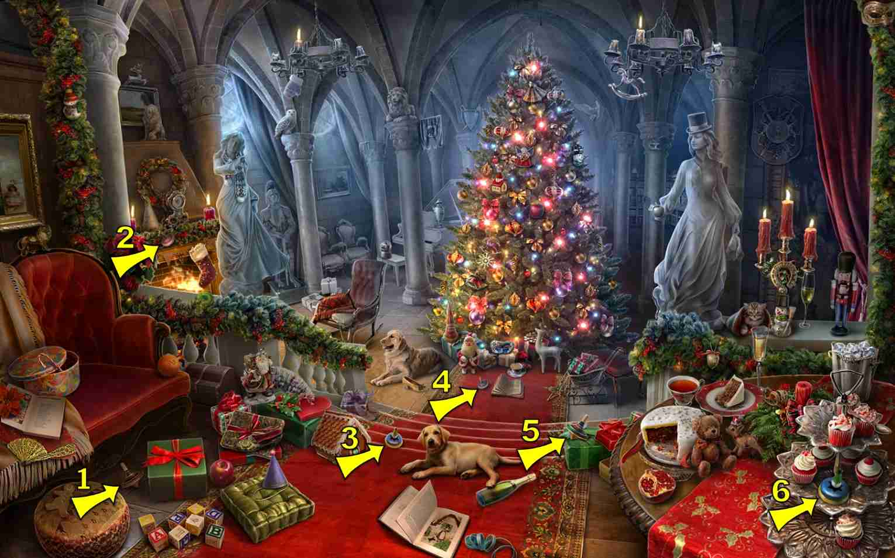

8 items:

2 items:
- Bottom right side of tree (white)
- Top left side of tree (white)

8 items:
- In wagon of gifts, bottom center
- On curtain, top right
1 items:
- On the axis of the globe, left lower side of screen
7 items:
1 items:
- On the front legs of the rocking horse.


2 items:
- On the left top of the fire place
- In the middle of the Big cake on the right table
1 items:
- Over the fireplace in the fir green
4 items:
- On the skirt of the statue of lady on right side (impossible to see)
8 items:
- On the corner where rails/banisters meet on the left

7 items:
- Handle of cake tier stand
- Ornament, upper left on Christmas tree near the top
- Ornament, middle of right side of Christmas tree
- Ornament, bottom left of Christmas tree above & between red & green presents
- Right corner of far left picture, the one half off screen
- Corner of banister below left statue's feet - Hard to see because it's inside the horseshoe.
- On right side of right chandelier
7 items:
- Whole orange on the bench
9 items:
- Center of scene: between bottom of stairs and Christmas tree (white)
3 items:
- Under Left Floor of the Christmas Tree, in front of green box
- To the left of round table and green box
- Upper left stair corner
5 items:
- On Left Chandelier
- In Hair of Right Statue
- On right side of Carpet (left of the table)
- On top of cake (white)
- In Champagne bucket (silver)
6 items:
- On the of the chain of the Chandelier on the left side of the tree.

6 items:
- Right chandelier, left candle
- On a low branch of the tree, just above the presents
8 items:
- Middle of Wreath above fireplace (yellow)
- On carpet right of rocking horse (yellow)
- Above candelabra in shadows (gray)
- Center bottom of Christmas tree (yellow)
- Lower left of Cake on table (hard to see)
- Above top right of tree (hard to see, gray)
- Left of left Chandelier on arch
- Under left balustrade railing
4 items:
- On edge of the table to the right
- On floor, between globe and center table
- In sack of gifts, bottom center
- On the top right, along the curtain edge
5 items:
- On leg of center table (outline, hard to see)
- Right arm of left chair
- Sitting on third staff, between right and center chairs
- In top part of the Christmas tree
- Very top right, on upper shelf